20 candidates for Emmet's technique library (session 3C, H-22). Each was found in your instruction books and ranked by how widely official models in the LDraw OMR join its key parts (1318 sets mined). Each picture is a render of my sketch of it in Emmet's DSL, which validates with no findings; an accepted sketch becomes the technique, with its tests and render, and a rejected one is dropped. Nothing is taken from the models' files or the books' pages (D-48). Every candidate starts as Accept: switch the ones you don't want, add a note if it helps, then copy your answers and paste them to Claude.
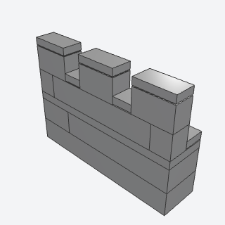
battlementsA parapet of merlons and crenels along the front edge of a thick wall's top, with a tiled wall walk behind.
Crowning any castle wall or tower top.
x, y, z, length, color, merlon, crenel, tie, titlebatch-4/battlements.py3004 + 3069b + 3020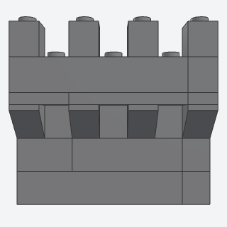
machicolationA wall's top course of inverted-slope corbels that carry a slab a stud out over the face, with drop holes between them.
Giving a castle wall or gatehouse an overhanging parapet.
x, y, z, length, depth, color, spacing, titlebatch-4/machicolation.py3665b + 3020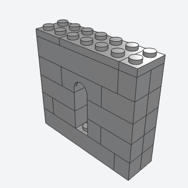
arrow_slitA thick wall with a narrow round-headed slit on the outside that opens into a wide corbel-headed embrasure inside.
Putting loopholes in curtain walls and towers.
x, y, z, length, offset, color, titlebatch-4/arrow_slit.py4490 + 3665b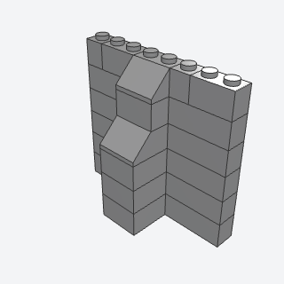
buttressA stepped pier bonded into the face of a wall, its two set-backs weathered with 2 x 2 slopes.
Stiffening and breaking up a long castle or church wall.
x, y, z, length, rows, offsets, color, titlebatch-4/buttress.py3002 + 3039 + 3003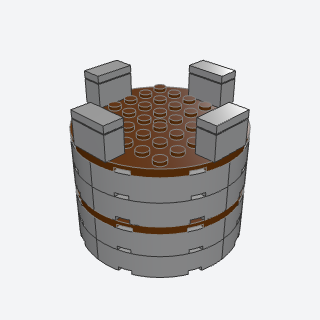
round_towerA hollow round tower 8 studs across, rings of four curved bricks tied by round plate floors, with merlons over the seams.
Building a castle's round corner or keep tower.
Note: Its curved pieces' joints line up course after course; only the round floor plates and the merlons on top tie the four quarters together. That's against our no-joint-on-a-joint rule, so it may want rework.
x, y, z, rows, floor_every, color, floor_color, merlons, titlebatch-4/round_tower.py48092 + 74611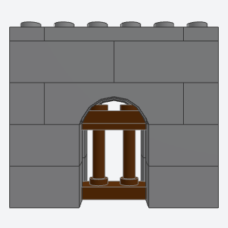
portcullisA gate grille of spindled fences that slides in a slot between the leaves of a 3-stud wall, behind arched gateways.
Building a gatehouse whose grille can be raised.
x, y, z, length, width, grilles, color, grille, titlebatch-4/portcullis.py30055 + 3659 + 3710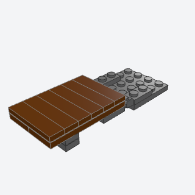
drawbridgeA plank deck on a pair of locking hinges at a gateway's threshold that lies across the moat or swings up.
Bridging a moat in front of a castle gate.
x, y, z, width, length, color, hinge, titlebatch-4/drawbridge.py44302a + 44301a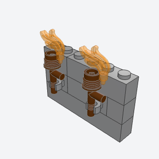
torch_sconceTorches standing in clip bricks laid in a wall's course, with flames in their heads.
Lighting castle walls, gateways, and dungeons.
x, y, z, length, at, color, torch, flame, titlebatch-4/torch_sconce.py60475b + 3959 + 64647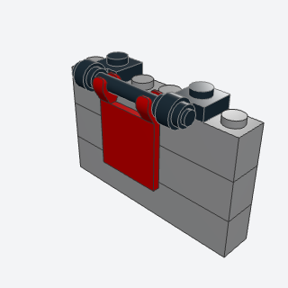
wall_bannerA flag turned on its side hanging down a wall's face from a bar held in two clip plates on the wall top.
Hanging heraldic banners on castle walls and halls.
Note: The banner is a 2 x 2 flag on a clip.
x, y, z, at, color, bar, titlebatch-4/wall_banner.py4081b + 30374 + 2335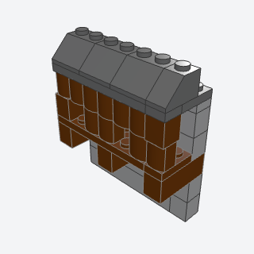
wooden_hoardingA covered timber gallery on beams through a wall's top course, with a log front, loopholes, and a sloped roof.
Adding a wooden fighting gallery to a castle wall top.
x, y, z, length, color, timber, roof, titlebatch-4/wooden_hoarding.py3622 + 30136 + 3039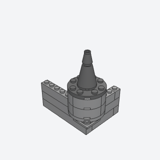
bartizanA small round turret on a round plate over the outside corner of two walls, on an inverted-slope corbel, with a cone roof.
Dressing the corners of castle walls and towers.
x, y, z, corner, rows, color, roof, titlebatch-4/bartizan.py60474 + 3676 + 3063b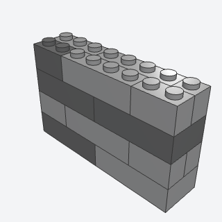
thick_wallA wall 2 studs thick in alternating header and two-leaf courses, with darker stones scattered through it.
Building solid castle curtain walls and keeps.
x, y, z, length, rows, color, stone, stones, seed, titlebatch-4/thick_wall.py3001 + 3010 + 3004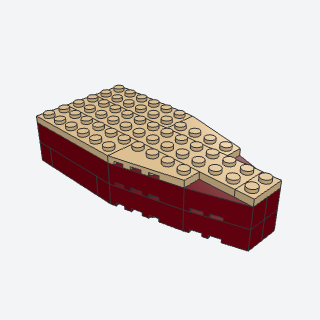
ship_hullA hull 6 studs wide whose sides close in to a pointed bow on paired wedge bricks, decked with plates and matching wings.
Starting any minifig-scale boat or ship.
Note: The bow ends in a blunt 2-stud nose (the wedges taper 2 to 1). The bow wedges are tied only by the deck; lower down each just stacks on the one below, so it passes the validator but would be loose in real bricks.
x, y, z, length, rows, color, deck, titlebatch-4/ship_hull.py41767 + 41768 + 6564 + 6565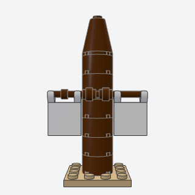
mast_and_yardA mast of round bricks with a bar yard held in two clip plates and flag sails hung from it.
Rigging a ship's mast.
Note: The sails are 2 x 2 flags on the yard, so they're small.
x, y, z, height, yard_at, color, sail, titlebatch-4/mast_and_yard.py3941 + 4081b + 63965a + 2335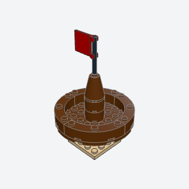
crows_nestA round lookout on a mast's top: an 8 x 8 round plate, a ring of curved bricks for its rail, and a topmast with a pennant.
Topping a ship's mast or a lookout post.
x, y, z, top, color, flag, titlebatch-4/crows_nest.py74611 + 48092 + 3941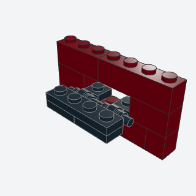
cannon_portA gun port in a hull side with a lid of handle plates and a plate, hinged on clips along its sill.
Arming a ship's hull with opening gun ports.
Note: The lid sits half a stud off the hull's grid, so each handle centers on its clip. It's the same clip-and-handle hinge as hinge_roof.
x, y, z, length, ports, rows, color, lid, titlebatch-4/cannon_port.py4081b + 2540 + 3710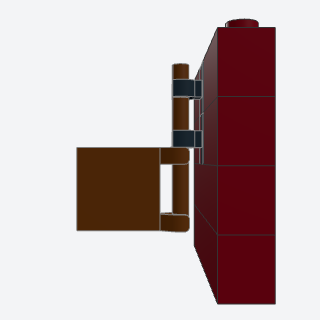
rudder_hingeA flag rudder blade swinging on a vertical bar held by two clip bricks laid in the stern.
Giving a boat a rudder that turns.
Note: The rudder blade is a 2 x 2 flag on clips, so it's small.
x, y, z, fitting, rudder, titlebatch-4/rudder_hinge.py60475b + 30374 + 2335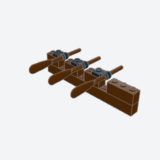
oarsOars lying in clip-plate rowlocks beside notches in a boat's gunwale course, blades out past the side.
Fitting a rowing boat or galley with oars.
x, y, z, length, spacing, color, oar, lock, titlebatch-4/oars.py4081b + 2542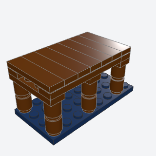
dock_pierA timber pier on round 1 x 1 piles with cross beams, side stringers, and tile planks laid across.
Building docks, jetties, and boardwalks over water.
x, y, z, length, width, height, color, deck, titlebatch-4/dock_pier.py3062b + 3710 + 2431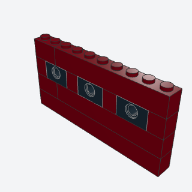
portholesA hull course with Technic bricks with a hole every few studs, which read as round portholes.
Adding portholes to ship hulls, submarines, and the like.
x, y, z, length, spacing, color, rim, titlebatch-4/portholes.py3700 + 3010